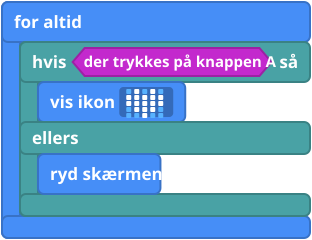
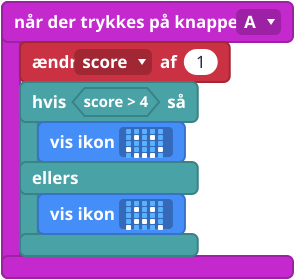
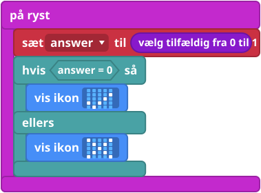

Hvad er det?
Nogle gange skal din micro:bit vælge. hvis ... så ... ellers (if ... then ... else) er en vejgaffel: hvis noget er sandt, kører blokkene i så. Hvis det ikke er, kører blokkene i ellers.
Det "noget" er et spørgsmål, man kan svare ja eller nej til, og det kaldes en betingelse. Bliver der trykket på knap A? Er scoren større end 4? Blokkene med spidse ender er betingelser.
Blokkene
Blokkene ligger i gruppen Logik (Logic), undtagen der trykkes på knappen A (button A is pressed), som ligger i Input.


Små eksempler


4 så vis ikon glad ellers vis ikon trist">
Prøv det her
- Lav hjerte-eksemplet, og hold A nede.
- Skift 4-tallet ud med et andet tal, og se, hvad der ændrer sig.
- Få den magiske kugle til at give tre svar ved at bruge + på hvis-blokken og vælg tilfældig fra 0 til 2 (pick random 0 to 2).
- Sværere: tænd en LED, mens en knap bliver holdt nede (se Tænd en LED).
Typiske fejl
- Der ændrer sig ingenting. Hvis-blokken ligger i når programmet starter (on start), så den tjekker kun én gang. Flyt den ind i for altid.
- Betingelsen kan ikke passe ind. Betingelser er blokkene med spidse ender. Runde blokke er værdier, og de passer ikke ind der.
- Der står "=", men jeg ville have "større end". Klik på tegnet i sammenligningsblokken for at ændre det.
Koden skrevet som tekst
JavaScript: if (input.buttonIsPressed(Button.A)) {
basic.showIcon(IconNames.Heart)
} else {
basic.clearScreen()
}
Python: if input.button_is_pressed(Button.A):
basic.show_icon(IconNames.HEART)
else:
basic.clear_screen()
V1 og V2
Det samme på begge.
Lærernoter
- Tid: 30 til 40 minutter.
- Det lærer de: betingelser (sandt eller falsk), at vælge mellem to veje, og at tjekke igen og igen.
- Typisk misforståelse: en hvis inde i når programmet starter kører kun én gang.
- Billederne af blokkene er forenklede tegninger. Tjek de rigtige blokke i MakeCode.